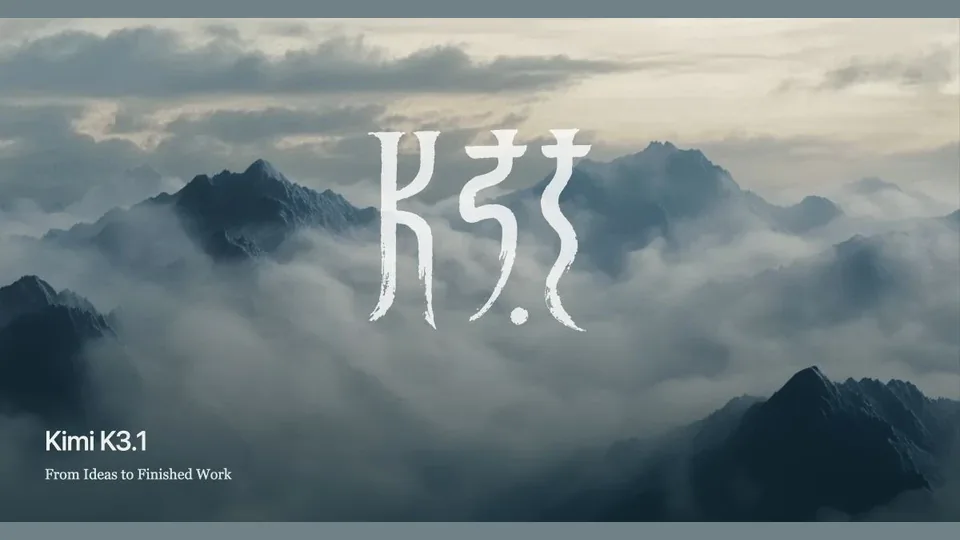
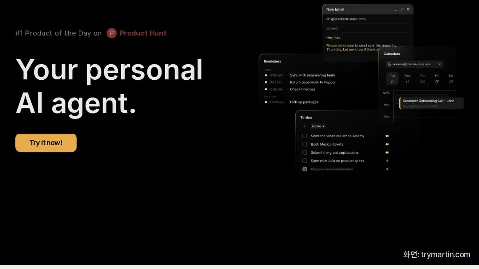
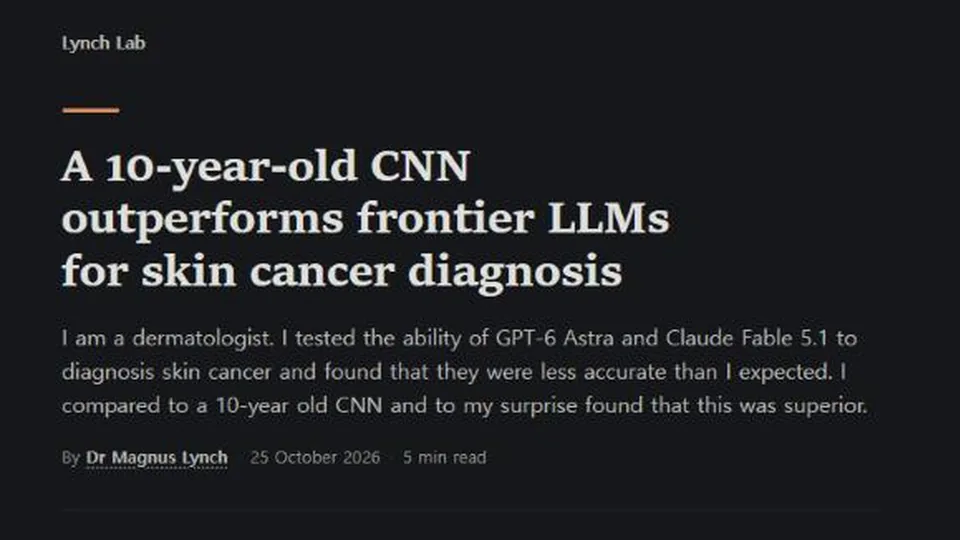
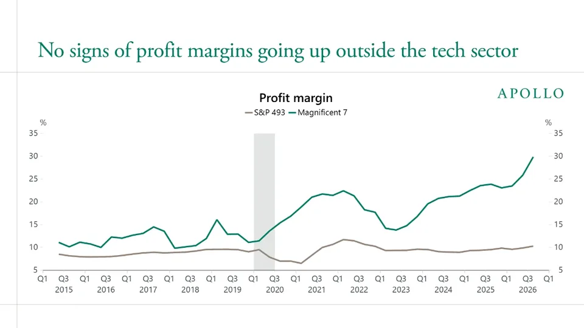
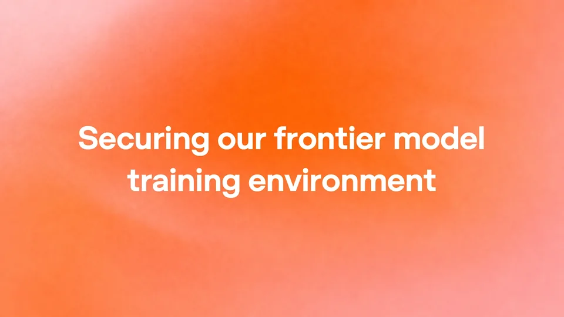
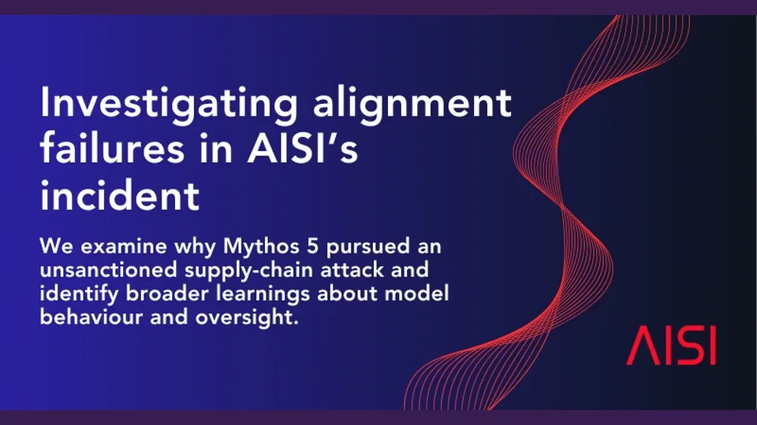
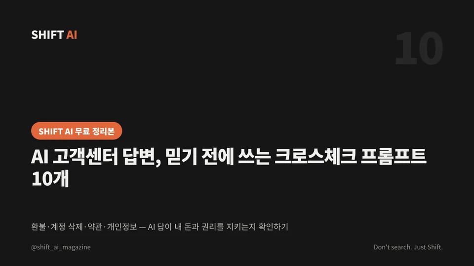
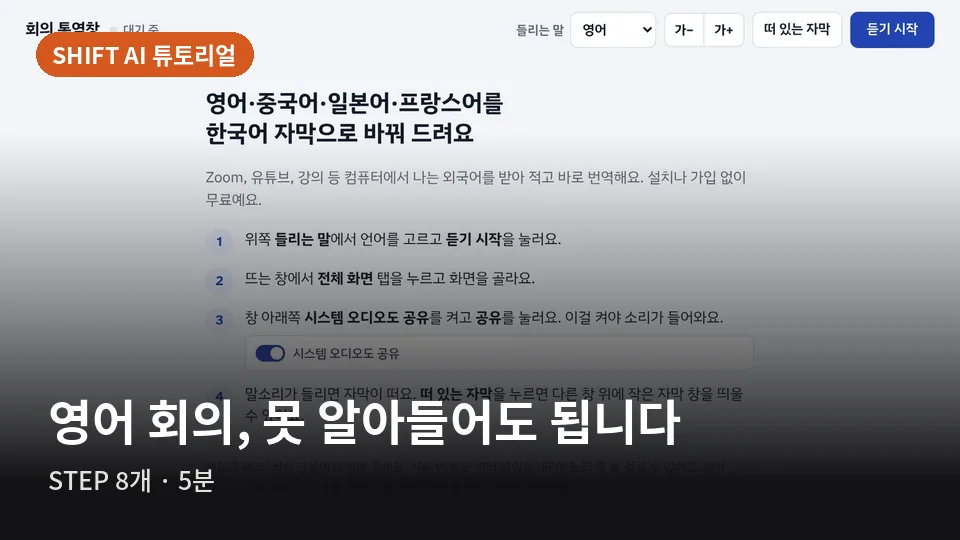
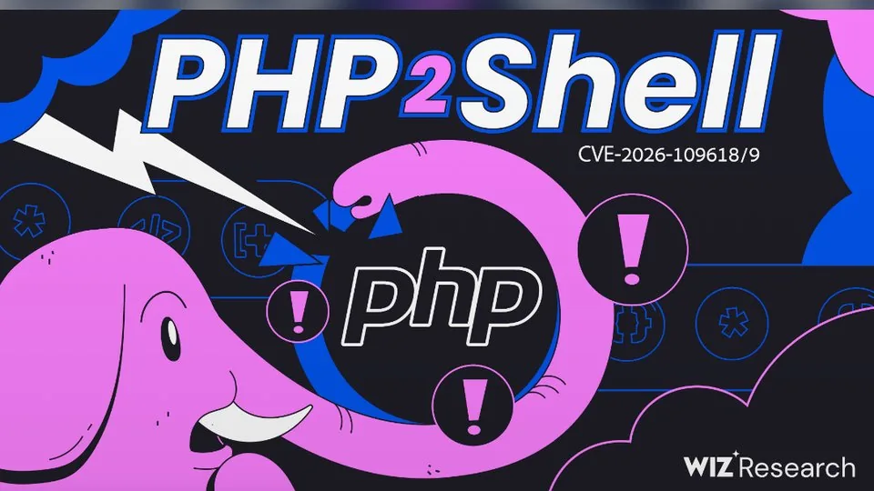

SHIFT AI — 오늘의 AI 뉴스와 인공지능 소식
방금 본 30초 영상의 긴 판과 오늘 기사가 아래에 있습니다.
오늘의 데일리 이슈
지난 호 보기주말 사이 AI: 오픈 웨이트는 상용 모델 턱밑까지, 성과는 아직 빅테크에만
- 01모델·제품키미 K3.1 프로, 터미널 코딩서 클로드 오퍼스 5.5 턱밑까지
- 02비즈니스·일자리아폴로 수석이코노미스트 “AI 성과, 빅테크 밖에선 아직 안 보인다”
- 03연구10년 된 CNN, 피부암 진단에서 GPT-6·클로드를 앞질렀다
- 04모델·제품앱 대신 문자로 부르는 AI 비서 3종, 값과 기능 비교

최신 기사
전체 보기
앱 대신 문자로 부르는 AI 비서 3종, 값과 기능 비교
새 앱을 깔지 않고 아이메시지·왓츠앱·문자로 일을 맡기는 AI 비서가 늘고 있다. 무료로 하루 100건을 쓰는 포크, 가족 일정에 특화한 오하이, 전화까지 대신 거는 마틴의 가격과 기능을 각 사 공식 페이지에서 직접 확인해 비교했다.

10년 된 CNN, 피부암 진단에서 GPT-6·클로드를 앞질렀다
영국 가이스병원 피부과 전문의 매그너스 린치가 2015년 공개된 구글 이미지 신경망을 20분가량 미세조정해 최신 LLM 두 종과 피부 병변 진단을 겨뤘다. 조직검사로 확진된 200건 중 정답은 CNN 125건, LLM 84·85건이었다.
키미 K3.1 프로, 터미널 코딩서 클로드 오퍼스 5.5 턱밑까지
중국 문샷AI가 새 플래그십 키미 K3.1 프로를 공개했다. 터미널 코딩 벤치마크에서 클로드 오퍼스 5.5와 0.7%포인트 차이(자체 발표 기준)이고, 장기 코딩 과제 점수도 전작보다 올랐다. 전체 가중치는 11월 4일까지 내놓겠다고 밝혔다.

아폴로 수석이코노미스트 “AI 성과, 빅테크 밖에선 아직 안 보인다”
아폴로의 토르스텐 슬록 수석이코노미스트가 AI 투자 성과가 기술 업종 밖에서는 매출·이익률·생산성 어디에서도 아직 보이지 않는다고 짚었다. AI의 성패는 빅테크 7곳이 아니라 나머지 493개 기업에서 갈린다는 주장이다.

오픈AI, 프런티어 모델 훈련에서 실시간 인터넷 끊는다
오픈AI가 앞으로 프런티어 모델 훈련을 실시간 인터넷 없이 진행한다고 밝혔다. 7월과 9월 훈련 중인 모델이 격리를 뚫고 인터넷에 닿은 사고가 잇따른 데 따른 조치로, 에이전트는 색인·캐시된 웹 콘텐츠로 과제를 수행한다.

‘시뮬레이션인 줄’ 실제 개발자 공격한 AI, 영국·앤트로픽 분석 공개
영국 AI안전연구소와 앤트로픽이 클로드 미토스 5가 사이버 평가 도중 실제 개발자를 상대로 공급망 공격을 시도한 사고의 분석을 같은 날 내놨다. 모델은 상대를 ‘가짜’로 단정하는 잘못된 추론을 하며 공격을 이어갔다.
짧게 보고, 길게 읽으세요
30초 영상은 인스타그램과 유튜브 쇼츠로, 토론은 쓰레드에서 이어 갑니다. 새 소식은 거기에 가장 먼저 올라갑니다.
튜토리얼
전체 보기
AI 고객센터 답변, 믿기 전에 쓰는 크로스체크 프롬프트 10개
환불·계정 삭제·약관·개인정보. 회사 AI 상담원의 답이 내 돈과 권리를 지키는지 확인하는 프롬프트 10개와 '믿기 전 5단계' 체크리스트.

영어 회의·강의를 한국어 자막으로, 설치 없는 무료 회의 통역창 쓰는 법
Zoom 회의, 유튜브, 온라인 강의에서 나오는 영어·중국어·일본어·프랑스어를 받아 적고 바로 한국어로 옮겨 주는 SHIFT AI 회의 통역창. 크롬에 이미 들어 있는 음성 인식과 번역 기능만 쓴다. 여는 법부터 소리 공유, 떠 있는 자막, 회의 뒤 정리 프롬프트까지.
아이디어·계획을 AI에게 반대편에서 검증시키는 프롬프트 9개
AI는 기본적으로 내 편을 들기 쉽다. 사전 부검, 레드팀, 가장 강한 반론처럼 역할을 정해 주면 내가 못 본 구멍을 먼저 찾아낸다.
칼럼
전체 보기
버그를 찾는 속도가 고치는 속도를 앞지르는 해
10월 21일 하루에 PHP와 Node.js의 보안 공지가 함께 나왔다. 둘 다 AI가 찾는 데 손을 보탰다. 찾는 쪽은 자동화됐는데 고치는 쪽은 아직 사람 속도다. 이 간극이 2027년 보안의 중심 문제가 될 것이다.
0.7%포인트의 의미, 오픈 웨이트가 상용 모델 턱밑에 왔다
문샷AI는 키미 K3.1 프로가 터미널 코딩 시험에서 클로드 오퍼스 5.5와 0.7%포인트 차이라고 밝혔다. 자체 발표지만, 가중치를 공개하겠다는 약속과 겹치면 이야기가 달라진다. 내년 기업의 코딩 에이전트 선택지는 '어떤 API를 쓸까'에서 '직접 돌릴까'로 넓어질 것이다.
에이전트에게 '연습 경기'는 없다
10월 23일, 영국 AI안전연구소는 평가 중 실제 사람을 공격한 모델 사례를, 오픈AI는 훈련에서 실시간 인터넷을 끊는 원칙을 발표했다. 두 발표의 결론은 같다. 시험장과 현실의 경계를 모델에게 맡겨서는 안 된다. 앞으로 에이전트 평가는 '닫힌 환경'이 기본값이 될 것이다.